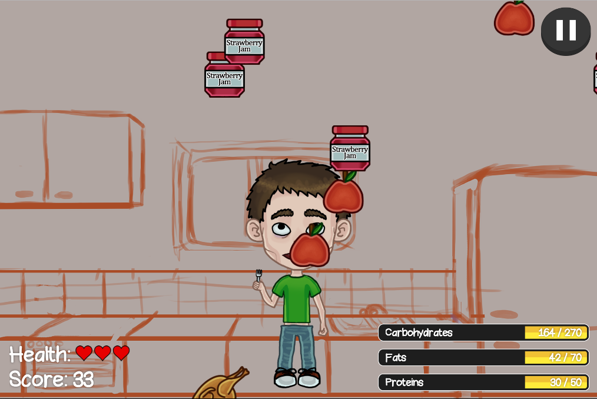
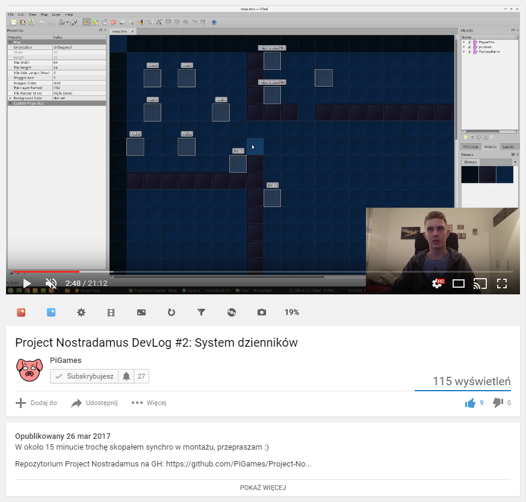

Backstory

Feed The Bob

Przetestuj środowisko przed rozpoczęciem

Zbierz swoją drużynę

Nie masz grafika? Nic się nie stało!

Grafiki
Audio
Korzystaj z template'ów
Encalve Phaser Template
 https://github.com/enclavegames/Enclave-Phaser-Template
https://github.com/enclavegames/Enclave-Phaser-Template
PiGames Phaser Template (ES6)
 https://github.com/PiGames/PiGames-Phaser-Template
https://github.com/PiGames/PiGames-Phaser-Template
Znajdź swoje MVP
Mockuj ile się da
export default class FoodSpawner extends Phaser.Group {
spawnFood() {
this.game.world.add( new Food( 0, 0, 'apple' ) );
setTimeout( () => {
this.game.world.add( new Food( 0, 0, 'hamburger' ) );
}, 1000 );
setTimeout( () => {
this.game.world.add( new Food( 0, 0, 'chicken' ) );
}, 2000 );
}
}
Lepiej merge'ować za często niż za rzadko

Nie daj się presji czasu

Nie daj się presji czasu
Dokończ projekt po hackatonie
Dokończ projekt po hackatonie
Podsumowanie
- Przygotuj środowisko przed hackatonem
- Zadbaj o różnorodny team
- Korzystaj z template'ów
- Skup się na implementacji MVP
- Dużo mockuj
- Merge'uj często
- Nie panikuj
- Dokończ projekt po hackatonie
Autopromocja

Project Nostradamus

YouTube
Github

PS:
Szukamy grafika i dźwiękowca
i stażu